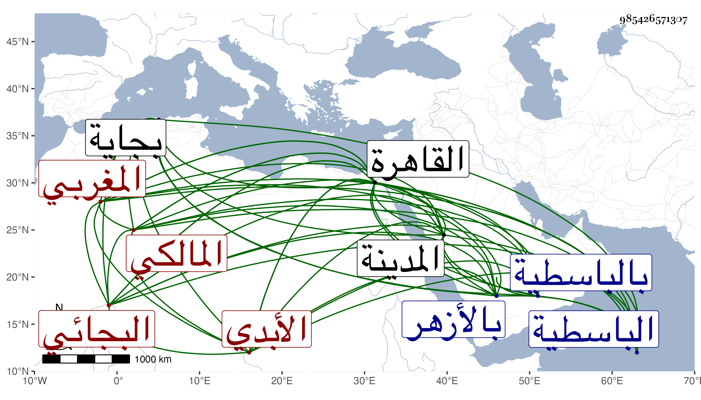

0902Sakhawi.DawLamic.ITO20230111-ara1.EIS1600.985426571307
Biography ID: 985426571307
504
أحمد بن محمد بن محمد بن عبد الرحمن بن علي بن أحمد الشهاب البجائي الأبدي المغربي المالكي نزيل الباسطية ويعرف بالآبدي . اشتغل في بلاده وقرأ في بجاية على أبي عبد الله محمد بن يحيى بن عبد الله البيوسقي البجائي الشفا وبعضه على أبي عبد الله محمد بن محمد بن محمد القماح الأندلسي وقدم القاهرة فحضر دروس القاياتي وابن قديد والعز عبد السلام البغدادي وترافق هو وابن يونس الآتي في الأخذ رواية عن العز عبد السلام القدسي ولا أستبعد أن يكون أخذ عن شيخنا وحج وأخذ عن الجمال الكازورني بالمدينة إجازة وعن غيره وكتب بخطه أشياء بل درب زوجته نفيسة وكانت تكتب له أيضا وتقدم في العلوم سيما العربية فلم يكن بعد شيخنا ابن خضر من يدانيه في إرشاد المبتدئين وله فيها حدود نافعة كما أنه كتب على إيساغوجي شرحا مفيدا وتصدى لنفع الطلبة بالأزهر أولا ثم بالباسطية حين سكنها برغبة أحد شيوخه العز البغدادي له عنها إلى أن مات وأخذ عنه الأعيان من كل مذهب فنونا كالفقه والعربية والصرف والمنطق والعروض ، وكنت ممن أخذ عنه العربية وغيرها بل أخذ عنه أخي أيضا وكان كثير الميل إلينا متواضعا بشوشا رضيا مجاب الدعوة حتى قيل أنه لكثرة ما كان يرى من تهكم الشباسي بالطلبة بل وبالشيوخ دعا عليه فابتلي بالجذام ، عديم التردد لبني الدنيا بعيدا عن الشر ودخوله مع أبي الفضل المغربي في كائنة الشريف الكيماوي بتلبيس من المشار إليه ليتقوى به ومع ذلك فلم يتكلم ولم يزل على وجاهته في العلم وإقرائه حتى مات في عشري رمضان سنة ستين بالقاهرة ودفن بتربة الصلاحية وقد جاز الستين ظنا رحمه الله وإيانا . ورأيت من يقول أن سنة وفاته سنة إحدى وأن الجمالي ناظر الخاص أرسل يلتمس منه قضاء المالكية بعد وفاة السنباطي فاعتذر بضعفه ولم يلبث أن مات ، وهو ملتئم مع كونها في سنة إحدى فإن السنباطي مات في رجب منها .
